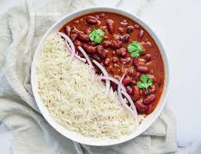

Rajma Chawal

Description
Rājmā, also known as rajmah, rāzmā, or lal lobia, is a vegetarian dish, originating from the Indian subcontinent, consisting of red kidney beans in a thick gravy with many Indian whole spices, and is usually served with rice.
Ingredients
- 1 cup of rajma / red kidney beans
- 1 cup of rice cooked
- 1 large onion sliced thin
- 1 to mato sliced
- 1/2 tsp of cumin / jeera
- 1 " piece of Indian cinnamon powdered
- 1 " piece of ginger grated
- 2-3 green chillies chopped (or 3/4 tsp red chilli powder)
- 1/4 tsp of turmeric powder
- 1 tbsp of coriander powder
- 1 tsp of amchur dried mango powder or use a little tamarind as a substitute
- 1 tsp of chaat masala
- 2 tbsp of oil
- Salt to taste
Steps
- Soak the rajma (kidney beans) for at least 8 hours or overnight. Pressure cook for 5-6 whistles until soft yet not mushy. Set aside.
- Heat oil and add the cumin seeds. When they sizzle and begin to change colour, add the onions. When they turn pink, add the powdered cinnamon, ginger, and green chillies. Fry for 2-3 mins.
- Then add the coriander powder, amchur or tamarind, and turmeric. Mix well and cook for another 3-4 mins. My onion-masala mixture is red because I used red chilli powder instead of green chillies.
- Add the cooked rajma along with the water used to cook it in and the sliced tomato. Mix well and let simmer for 5 mins.
- When the gravy thickens a bit, add the chaat masala and salt. Mix well, bring to boil again and turn off heat.
- Add cooked rice and mix gently.
- Garnish with chopped coriander leaves (cilantro) and serve warm with some plain yogurt.